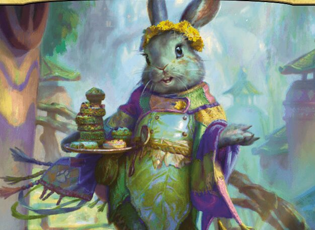

Welche Commander gewinnen mit deinem Budget am häufigsten?
64 beliebte Commander, je Preisklasse (100 €, 200 €, 300 €, 400 €, 500 € und 1.000 €) mit einem Budget-Deck gebaut und laufend in Forge gegeneinander getestet. Zu jedem Deck: Kartenliste, Statistik aus den Partien und Kaufliste für Cardmarket.
- 23.264 Partien
- 150 Turniere
- 384 getestete Decks
Letztes Turnier: . Nach jedem Turnier wird die Seite automatisch aktualisiert.
Rangliste
Die erfolgreichsten Decks bis 100 € in der Forge-Simulation (Bracket 3: höchstens 3 Game Changer).
 Illustration: Valera Lutfullina · © Wizards of the Coast
Illustration: Valera Lutfullina · © Wizards of the CoastUreni of the Unwritten
 Illustration: Kai Carpenter · © Wizards of the Coast
Illustration: Kai Carpenter · © Wizards of the CoastGiada, Font of Hope
 Illustration: Eric Deschamps · © Wizards of the Coast
Illustration: Eric Deschamps · © Wizards of the CoastOloro, Ageless Ascetic
Rangliste bis 100 €
aus 42 Turnieren| # | Commander | Elo | Form | Stufe | Partien | Preis |
|---|---|---|---|---|---|---|
| 1 | | 1771▲14 | 2111313412 | S | 420 (2) | 99,39 € |
| 2 | | 1743▼21 | 1234313134 | S | 421 (12) | 99,23 € |
| 3 | | 1717▼8 | 1442141414 | S | 420 (4) | 98,90 € |
| 4 |  | 1717▲29 | 1311331114 | S | 421 (3) | 98,72 € |
| 5 |  | 1682▼13 | 4421223143 | A | 421 (6) | 93,25 € |
| 6 |  | 1675▼11 | 3343122222 | A | 420 (1) | 98,07 € |
| 7 |  | 1665▼6 | 3412323331 | A | 422 (4) | 99,53 € |
| 8 |  | 1664▲33 | 2212311412 | A | 421 (10) | 99,87 € |
| 9 |  | 1656▲11 | 1243441211 | A | 421 (13) | 99,79 € |
| 10 |  | 1647▼7 | 3134312432 | A | 421 (2) | 99,05 € |
| 11 |  | 1647▲8 | 4312244121 | A | 421 (9) | 99,97 € |
| 12 |  | 1632▲5 | 1232242313 | A | 420 (15) | 99,76 € |
| 13 |  | 1625▲21 | 2222131322 | A | 421 (16) | 99,67 € |
| 14 |  | 1604▼25 | 4134424323 | A | 420 (9) | 98,60 € |
| 15 |  | 1600▼12 | 2442414431 | A | 420 (9) | 98,11 € |
| 16 |  | 1596▲4 | 2334112323 | B | 420 (14) | 98,50 € |
| 17 |  | 1594▼14 | 1334441423 | B | 421 (13) | 98,71 € |
| 18 |  | 1584▲13 | 3113242314 | B | 422 (13) | 98,97 € |
| 19 |  | 1574▼8 | 4441124242 | B | 422 (6) | 98,51 € |
| 20 |  | 1570▲1 | 3344213141 | B | 422 (13) | 97,64 € |
| 21 |  | 1563▼6 | 4433122213 | B | 420 (17) | 99,11 € |
| 22 |  | 1562▼10 | 3434132124 | B | 422 (11) | 98,92 € |
| 23 |  | 1556▲8 | 1124331224 | B | 420 (23) | 99,60 € |
| 24 |  | 1552▲8 | 1122213433 | B | 421 (10) | 97,98 € |
| 25 |  | 1549▼15 | 2124444231 | B | 420 (42) | 99,21 € |
| 26 |  | 1538▼14 | 1222343423 | B | 421 (11) | 99,98 € |
| 27 |  | 1532▲40 | 3211112314 | B | 420 (16) | 96,44 € |
| 28 |  | 1525▲19 | 4214431121 | B | 421 (25) | 98,92 € |
| 29 |  | 1523▼9 | 3424311332 | B | 422 (17) | 96,30 € |
| 30 |  | 1506▼7 | 3332423411 | B | 421 (9) | 99,20 € |
| 31 |  | 1504▼15 | 4431323134 | B | 191 | 97,41 € |
| 32 |  | 1503▼2 | 2342132124 | B | 420 (15) | 97,46 € |
| 33 |  | 1494▲24 | 4112334112 | C | 421 (15) | 100,00 € |
| 34 |  | 1485▼4 | 4421232241 | C | 421 (15) | 98,08 € |
| 35 |  | 1484▲14 | 2341121243 | C | 422 (9) | 99,56 € |
| 36 |  | 1480▼22 | 2143434414 | C | 422 (24) | 95,06 € |
| 37 |  | 1476▼1 | 3141223431 | C | 421 (12) | 97,40 € |
| 38 |  | 1468▼5 | 1122224434 | C | 420 (15) | 99,25 € |
| 39 |  | 1466▲20 | 4113212322 | C | 420 (18) | 99,62 € |
| 40 |  | 1443▲11 | 3314311441 | C | 420 (14) | 98,92 € |
| 41 |  | 1434▲1 | 3314314241 | C | 421 (34) | 99,18 € |
| 42 |  | 1431▼34 | 2224234434 | C | 421 (5) | 98,65 € |
| 43 |  | 1430▲3 | 3441132132 | C | 422 (25) | 99,18 € |
| 44 |  | 1429▲5 | 3234313211 | C | 421 (18) | 99,94 € |
| 45 |  | 1416▼15 | 1434442132 | C | 420 (32) | 98,81 € |
| 46 |  | 1409▼25 | 2133442442 | C | 421 (26) | 97,80 € |
| 47 |  | 1401▼7 | 3432142321 | C | 420 (23) | 99,22 € |
| 48 | 1401▼39 | 4234334122 | C | 20 | 99,59 € | |
| 49 |  | 1393▲6 | 4412121134 | D | 102 | 99,39 € |
| 50 |  | 1388▲15 | 3331321211 | D | 421 (21) | 100,00 € |
| 51 |  | 1379▼33 | 2233422443 | D | 421 (13) | 99,95 € |
| 52 |  | 1375▼9 | 1234421323 | D | 422 (23) | 98,80 € |
| 53 |  | 1372▼44 | 4134434433 | D | 421 (25) | 98,81 € |
| 54 |  | 1371▲14 | 4221113441 | D | 422 (13) | 99,55 € |
| 55 |  | 1370▲12 | 1143133214 | D | 421 (33) | 99,75 € |
| 56 |  | 1369▲10 | 3214142114 | D | 422 (13) | 98,00 € |
| 57 |  | 1328▼5 | 1143332322 | D | 420 (44) | 99,98 € |
| 58 |  | 1312▲38 | 2221131214 | D | 420 (34) | 99,14 € |
| 59 |  | 1285▲27 | 2222233121 | D | 423 (33) | 100,00 € |
| 60 |  | 1263▼15 | 4234234233 | D | 421 (16) | 99,85 € |
| 61 |  | 1256▲5 | 2413342222 | D | 422 (37) | 98,89 € |
| 62 |  | 1210▲3 | 1422232344 | D | 420 (24) | 97,94 € |
| 63 |  | 1195▼20 | 4144344434 | D | 423 (21) | 98,00 € |
| 64 |  | 1150▲11 | 2413342343 | D | 422 (33) | 99,86 € |
- Reign of Dragons – Elo 1586, Siegquote 31 % in 100 Partien, wäre Platz 18
- Avengers Assemble – Elo 1579, Siegquote 28 % in 100 Partien, wäre Platz 19
- Doom Prevails – Elo 1557, Siegquote 30 % in 100 Partien, wäre Platz 23
- Turtle Power! – Elo 1533, Siegquote 25 % in 100 Partien, wäre Platz 27
Nicht mehr im Feld (bei EDHREC aus den Top gefallen, darum nicht in der Rangliste): Gishath, Sun's Avatar (Elo 1684, 318 Partien), Tom Bombadil (Elo 1502, 384 Partien), Arabella, Abandoned Doll (Elo 1466, 216 Partien)
Die erfolgreichsten Decks bis 200 € in der Forge-Simulation (Bracket 3: höchstens 3 Game Changer).
Illustration: Kai Carpenter · © Wizards of the CoastGiada, Font of Hope
Illustration: Eric Deschamps · © Wizards of the CoastOloro, Ageless Ascetic
Illustration: Valera Lutfullina · © Wizards of the CoastUreni of the Unwritten
Rangliste bis 200 €
aus 41 Turnieren| # | Commander | Elo | Form | Stufe | Partien | Preis |
|---|---|---|---|---|---|---|
| 1 | | 1798▲38 | 1113111231 | S | 411 (11) | 198,07 € |
| 2 | | 1764▼2 | 3213311144 | S | 413 (10) | 197,64 € |
| 3 | | 1749▼8 | 1332142331 | S | 413 (6) | 197,91 € |
| 4 | | 1722▼5 | 1442343112 | S | 412 (3) | 195,70 € |
| 5 | | 1686▼7 | 2234124124 | A | 410 (2) | 193,77 € |
| 6 | | 1684▲11 | 1324124213 | A | 412 (7) | 197,64 € |
| 7 | | 1682▼20 | 3424432122 | A | 410 (4) | 199,86 € |
| 8 | | 1674▲40 | 2131122122 | A | 410 (15) | 198,56 € |
| 9 | | 1669▼3 | 3113344241 | A | 410 (7) | 194,74 € |
| 10 | | 1667▲6 | 3222323311 | A | 410 (3) | 194,65 € |
| 11 | | 1665▼10 | 4441342114 | A | 412 (5) | 199,73 € |
| 12 | | 1659▲5 | 1221223432 | A | 411 (7) | 196,81 € |
| 13 | | 1649▼7 | 3312431432 | A | 410 (10) | 197,05 € |
| 14 | | 1643▲1 | 4142411432 | A | 411 (11) | 197,76 € |
| 15 | | 1633▼12 | 4431432431 | A | 411 (11) | 196,88 € |
| 16 | | 1615▼13 | 2141443243 | A | 410 (13) | 190,49 € |
| 17 | | 1586▼17 | 2344414241 | B | 412 (47) | 197,07 € |
| 18 | | 1582▼17 | 4332214433 | B | 410 (11) | 199,05 € |
| 19 | | 1573▼18 | 2213433343 | B | 412 (16) | 193,99 € |
| 20 | | 1559▼1 | 3323141342 | B | 410 (17) | 197,65 € |
| 21 | | 1549▲17 | 3142213123 | B | 411 (35) | 198,91 € |
| 22 | | 1544▼4 | 4313341144 | B | 410 (13) | 194,52 € |
| 23 | | 1539▲3 | 4312321414 | B | 411 (10) | 198,06 € |
| 24 | | 1530▲5 | 3441213132 | B | 411 (18) | 195,43 € |
| 25 | | 1523▼1 | 3443131331 | B | 411 (10) | 196,60 € |
| 26 | | 1512▲31 | 1112122242 | B | 413 (19) | 194,03 € |
| 27 | | 1508▲10 | 4121321424 | B | 411 (20) | 196,96 € |
| 28 | | 1502▲2 | 3134332114 | B | 411 (18) | 198,72 € |
| 29 | | 1489▼12 | 2421424314 | C | 412 (18) | 191,49 € |
| 30 | | 1487▲20 | 2221132314 | C | 410 (19) | 199,48 € |
| 31 | | 1486▼14 | 4241342134 | C | 410 (15) | 198,42 € |
| 32 | | 1484▲10 | 1422124431 | C | 230 (1) | 185,24 € |
| 33 | | 1476▲24 | 1123214331 | C | 410 (24) | 198,64 € |
| 34 | | 1466▼26 | 2334143243 | C | 410 (21) | 192,32 € |
| 35 | | 1459▼11 | 1443232124 | C | 410 (16) | 199,17 € |
| 36 | | 1457▼13 | 3143132434 | C | 411 (20) | 199,09 € |
| 37 | | 1454▲44 | 1111241124 | C | 411 (32) | 198,58 € |
| 38 | | 1449▼8 | 4223233221 | C | 413 (31) | 198,41 € |
| 39 | | 1447▲5 | 2331433131 | C | 411 (21) | 192,37 € |
| 40 | | 1445▼4 | 2344124213 | C | 412 (12) | 197,08 € |
| 41 | | 1434▼20 | 4134442314 | C | 410 (24) | 198,36 € |
| 42 | | 1427▲21 | 2312411134 | C | 410 (11) | 199,59 € |
| 43 | | 1426▲9 | 4243112124 | C | 410 (11) | 199,91 € |
| 44 | | 1423▲10 | 1412341124 | C | 410 (28) | 196,78 € |
| 45 | | 1416▼43 | 4333443242 | C | 410 (22) | 198,18 € |
| 46 | | 1409▲4 | 2242414221 | C | 412 (21) | 196,24 € |
| 47 | | 1398▼26 | 3434412431 | D | 410 (18) | 197,58 € |
| 48 | 1395▲6 | 4422122141 | D | 411 (28) | 193,79 € | |
| 49 | | 1388▲4 | 1223133223 | D | 412 (23) | 184,27 € |
| 50 | | 1376▲9 | 1314131343 | D | 412 (14) | 199,42 € |
| 51 | | 1370▲6 | 2121424142 | D | 411 (35) | 198,57 € |
| 52 | | 1365▲6 | 1313432213 | D | 410 (22) | 198,91 € |
| 53 | | 1360▲7 | 3234124121 | D | 411 (15) | 196,31 € |
| 54 | 1356▼76 | 2343324342 | D | 21 | 198,55 € | |
| 55 | | 1344▲31 | 1322213311 | D | 411 (24) | 199,16 € |
| 56 | | 1341▼25 | 4124243323 | D | 101 (2) | 198,25 € |
| 57 | | 1334▼3 | 4421114434 | D | 412 (28) | 199,98 € |
| 58 | | 1326▲1 | 1324324221 | D | 411 (39) | 197,32 € |
| 59 | | 1276▲30 | 3141243141 | D | 410 (29) | 196,60 € |
| 60 | | 1258▼26 | 4443233423 | D | 413 (18) | 194,75 € |
| 61 | | 1249▲4 | 2332313332 | D | 411 (48) | 199,52 € |
| 62 | | 1244▼43 | 4344342444 | D | 410 (27) | 198,05 € |
| 63 | | 1239▲15 | 3224134123 | D | 410 (23) | 199,48 € |
| 64 | | 1217▼16 | 4234242423 | D | 410 (40) | 199,96 € |
- Reign of Dragons – Elo 1568, Siegquote 25 % in 80 Partien, wäre Platz 20
- Doom Prevails – Elo 1547, Siegquote 26 % in 80 Partien, wäre Platz 22
- Turtle Power! – Elo 1545, Siegquote 34 % in 80 Partien, wäre Platz 22
- Avengers Assemble – Elo 1543, Siegquote 32 % in 80 Partien, wäre Platz 23
Nicht mehr im Feld (bei EDHREC aus den Top gefallen, darum nicht in der Rangliste): Gishath, Sun's Avatar (Elo 1713, 300 Partien), Tom Bombadil (Elo 1565, 360 Partien), Arabella, Abandoned Doll (Elo 1512, 165 Partien)
Die erfolgreichsten Decks bis 300 € in der Forge-Simulation (Bracket 3: höchstens 3 Game Changer).
Illustration: Eric Deschamps · © Wizards of the CoastOloro, Ageless Ascetic
Illustration: Valera Lutfullina · © Wizards of the CoastUreni of the Unwritten
Illustration: Mark Winters · © Wizards of the CoastNekusar, the Mindrazer
Rangliste bis 300 €
aus 19 Turnieren| # | Commander | Elo | Form | Stufe | Partien | Preis |
|---|---|---|---|---|---|---|
| 1 | | 1781▲12 | 1341411312 | S | 193 | 296,99 € |
| 2 | | 1773▲2 | 1141144214 | S | 192 | 295,91 € |
| 3 | | 1743▼22 | 3434132142 | S | 191 | 291,50 € |
| 4 | | 1738▲7 | 1422112242 | S | 190 | 297,68 € |
| 5 | | 1729▲47 | 1211114122 | S | 190 | 299,50 € |
| 6 | | 1728▲1 | 1214213224 | S | 190 (1) | 297,94 € |
| 7 | | 1707▼3 | 3222314123 | S | 192 | 295,92 € |
| 8 | | 1700▲1 | 4133143123 | A | 193 | 297,43 € |
| 9 | | 1685▼21 | 2142342234 | A | 190 | 298,53 € |
| 10 | | 1684▲5 | 4433132311 | A | 191 | 299,42 € |
| 11 | | 1678▲4 | 2314242221 | A | 190 | 296,37 € |
| 12 | | 1671▼32 | 2332323344 | A | 192 | 298,10 € |
| 13 | | 1653▲12 | 2143312331 | A | 190 (1) | 298,41 € |
| 14 | | 1652▼25 | 4343123333 | A | 191 | 297,45 € |
| 15 | | 1642▼3 | 2222243123 | A | 190 | 294,84 € |
| 16 | | 1605▲15 | 4332221411 | A | 190 (1) | 291,75 € |
| 17 | | 1603▲12 | 3114414441 | A | 193 (4) | 295,66 € |
| 18 | | 1598▲2 | 3222322231 | B | 191 (3) | 290,50 € |
| 19 | | 1598▲33 | 3113141413 | B | 190 (2) | 294,58 € |
| 20 | | 1570▼17 | 1441442433 | B | 190 | 290,74 € |
| 21 | | 1570▼15 | 2442421324 | B | 191 | 294,01 € |
| 22 | | 1549▼8 | 4321234414 | B | 191 (2) | 297,56 € |
| 23 | | 1548▼8 | 3423123441 | B | 192 (8) | 295,52 € |
| 24 | | 1543▲26 | 4314111314 | B | 190 (3) | 287,22 € |
| 25 | | 1537▲43 | 3111322121 | B | 190 (4) | 297,68 € |
| 26 | | 1536▼14 | 3312434133 | B | 190 (2) | 297,53 € |
| 27 | | 1521▲27 | 4341212112 | B | 190 (3) | 185,24 € |
| 28 | | 1507▼23 | 1444233144 | B | 190 (2) | 293,27 € |
| 29 | | 1504▼1 | 3134341124 | B | 191 | 292,40 € |
| 30 | | 1496▲8 | 4222134311 | C | 192 | 296,62 € |
| 31 | | 1491▲12 | 4134111343 | C | 190 | 297,74 € |
| 32 | | 1488▼38 | 2344222444 | C | 192 | 297,60 € |
| 33 | | 1482▼3 | 2414413241 | C | 190 | 294,11 € |
| 34 | | 1482▲1 | 1222413242 | C | 190 | 294,00 € |
| 35 | | 1478▼26 | 3431414344 | C | 190 (3) | 253,16 € |
| 36 | | 1470▼14 | 4431313432 | C | 190 | 295,48 € |
| 37 | 1462▼38 | 3422323134 | C | 10 | 296,70 € | |
| 38 | | 1460▲9 | 2212324132 | C | 191 | 295,74 € |
| 39 | | 1454▼19 | 2313324432 | C | 192 (1) | 293,67 € |
| 40 | | 1450▲27 | 1144111234 | C | 91 | 298,46 € |
| 41 | | 1441▼14 | 2443444211 | C | 191 (3) | 299,17 € |
| 42 | | 1438▲25 | 1143212124 | C | 191 | 299,71 € |
| 43 | | 1434▼14 | 4213443431 | C | 191 (2) | 299,40 € |
| 44 | | 1424▲11 | 2412331212 | C | 191 (2) | 277,59 € |
| 45 | | 1415▲2 | 3113424321 | C | 190 (2) | 297,36 € |
| 46 | | 1410▲11 | 2141133232 | C | 191 (1) | 298,65 € |
| 47 | | 1403▼15 | 2334223213 | C | 190 (1) | 294,63 € |
| 48 | | 1387▲5 | 1342242112 | D | 190 (1) | 292,18 € |
| 49 | | 1384▼8 | 3133141333 | D | 192 (2) | 293,84 € |
| 50 | 1381▼33 | 3224314443 | D | 190 (1) | 293,92 € | |
| 51 | | 1364▲12 | 1431331142 | D | 191 | 290,40 € |
| 52 | | 1356▼5 | 4221241422 | D | 192 (1) | 296,09 € |
| 53 | | 1345▲27 | 4213312112 | D | 190 (2) | 299,92 € |
| 54 | | 1327▼35 | 4124424334 | D | 191 (3) | 296,76 € |
| 55 | | 1326▲10 | 1323242311 | D | 191 (2) | 297,84 € |
| 56 | | 1303▲22 | 4324141113 | D | 191 (4) | 287,65 € |
| 57 | | 1281▲53 | 1321114212 | D | 190 (6) | 299,06 € |
| 58 | | 1267▼10 | 4441233222 | D | 190 (4) | 298,94 € |
| 59 | | 1264▼5 | 2444232213 | D | 190 (9) | 299,99 € |
| 60 | | 1245▼15 | 3331342344 | D | 190 (6) | 299,40 € |
| 61 | | 1223▼17 | 3234223243 | D | 190 (9) | 298,03 € |
| 62 | | 1207▼5 | 2123424433 | D | 190 (3) | 296,94 € |
| 63 | | 1193▼3 | 2233233333 | D | 191 (3) | 295,84 € |
| 64 | | 1185▼17 | 3443444142 | D | 191 (4) | 294,30 € |
- Doom Prevails – Elo 1568, Siegquote 26 % in 50 Partien, wäre Platz 22
- Reign of Dragons – Elo 1557, Siegquote 24 % in 50 Partien, wäre Platz 22
- Turtle Power! – Elo 1533, Siegquote 26 % in 50 Partien, wäre Platz 27
- Avengers Assemble – Elo 1498, Siegquote 26 % in 50 Partien, wäre Platz 30
Nicht mehr im Feld (bei EDHREC aus den Top gefallen, darum nicht in der Rangliste): Gishath, Sun's Avatar (Elo 1765, 101 Partien), Tom Bombadil (Elo 1503, 179 Partien)
Die erfolgreichsten Decks bis 400 € in der Forge-Simulation (Bracket 3: höchstens 3 Game Changer).
Illustration: Eric Deschamps · © Wizards of the CoastOloro, Ageless Ascetic
Illustration: Chris Cold · © Wizards of the CoastValgavoth, Harrower of Souls
Illustration: Kai Carpenter · © Wizards of the CoastGiada, Font of Hope
Rangliste bis 400 €
aus 15 Turnieren| # | Commander | Elo | Form | Stufe | Partien | Preis |
|---|---|---|---|---|---|---|
| 1 | | 1790▼20 | 1433441311 | S | 150 | 397,56 € |
| 2 | | 1758±0 | 1411233142 | S | 151 | 396,28 € |
| 3 | | 1748▼2 | 1124344211 | S | 150 (1) | 396,39 € |
| 4 | | 1742▼12 | 2222431412 | S | 150 | 392,49 € |
| 5 | | 1716▼25 | 1344213234 | S | 151 | 391,98 € |
| 6 | | 1704▲5 | 1444124131 | S | 151 | 394,51 € |
| 7 | | 1687▲6 | 3341131332 | A | 150 | 396,79 € |
| 8 | | 1672▲13 | 2232232311 | A | 150 | 399,22 € |
| 9 | | 1670▲26 | 3114321212 | A | 150 (2) | 356,99 € |
| 10 | | 1668▲17 | 1432212212 | A | 150 | 397,55 € |
| 11 | | 1667▲8 | 4113331233 | A | 151 | 397,57 € |
| 12 | | 1662▲15 | 3411114244 | A | 151 (1) | 390,67 € |
| 13 | | 1655▲5 | 2234321421 | A | 150 (1) | 394,21 € |
| 14 | | 1648▼5 | 4323314321 | A | 150 (1) | 398,44 € |
| 15 | | 1636▲17 | 4114412241 | A | 151 (7) | 387,73 € |
| 16 | | 1608▼28 | 3332414443 | A | 150 | 399,52 € |
| 17 | | 1603▲11 | 3123424113 | A | 150 (1) | 334,14 € |
| 18 | | 1601▼2 | 4224213413 | A | 150 (1) | 392,57 € |
| 19 | | 1601▲9 | 4122121334 | A | 150 | 360,64 € |
| 20 | | 1587▲25 | 1111234412 | B | 151 (1) | 395,59 € |
| 21 | | 1585▼9 | 2211443344 | B | 151 | 397,74 € |
| 22 | | 1579▲2 | 2311144423 | B | 151 (1) | 398,13 € |
| 23 | | 1573▼22 | 3341214344 | B | 151 (1) | 396,96 € |
| 24 | | 1532▲8 | 4223312133 | B | 150 (4) | 393,51 € |
| 25 | | 1521▲29 | 1113231243 | B | 152 (3) | 253,16 € |
| 26 | | 1518▼22 | 2233433232 | B | 150 (1) | 374,50 € |
| 27 | | 1513▲4 | 1434141341 | B | 151 (3) | 392,16 € |
| 28 | | 1513▼5 | 4332422141 | B | 152 (3) | 392,94 € |
| 29 | | 1505±0 | 1424414231 | B | 152 (3) | 393,55 € |
| 30 | | 1493▼34 | 4423342234 | C | 150 (2) | 398,35 € |
| 31 | | 1487▲28 | 3241142121 | C | 152 (4) | 398,36 € |
| 32 | | 1483▼26 | 3134423424 | C | 150 (1) | 397,28 € |
| 33 | | 1481▲37 | 1144312112 | C | 152 (1) | 394,89 € |
| 34 | | 1477▼7 | 3422212342 | C | 151 (2) | 395,12 € |
| 35 | 1468▲12 | 4232131313 | C | 150 (3) | 395,56 € | |
| 36 | 1468▼32 | 3323123442 | C | 10 | 398,31 € | |
| 37 | | 1460▼4 | 2343212313 | C | 150 (2) | 394,48 € |
| 38 | | 1453▲30 | 1111342232 | C | 151 (3) | 170,47 € |
| 39 | | 1452▲3 | 2311431433 | C | 151 (3) | 395,69 € |
| 40 | | 1439▲10 | 2312232221 | C | 150 (2) | 395,59 € |
| 41 | | 1435▲3 | 3413131324 | C | 150 (2) | 392,31 € |
| 42 | | 1431▼13 | 3214333441 | C | 151 (2) | 376,03 € |
| 43 | | 1426▼6 | 4431412414 | C | 151 | 398,53 € |
| 44 | | 1419▼11 | 4224222142 | C | 150 (1) | 346,61 € |
| 45 | | 1400▲3 | =134233114 | C | 151 (1) | 396,95 € |
| 46 | | 1396▼8 | 3224141323 | D | 151 (2) | 339,38 € |
| 47 | | 1393▲3 | 2211424222 | D | 150 (2) | 396,00 € |
| 48 | | 1392▼8 | 4412123342 | D | 150 | 390,76 € |
| 49 | | 1392▼31 | 2343432323 | D | 150 (1) | 398,00 € |
| 50 | | 1379▼11 | 4313414214 | D | 150 | 398,90 € |
| 51 | | 1370▲49 | 2312141111 | D | 70 (2) | 395,39 € |
| 52 | | 1362▼31 | 3333414333 | D | 153 (1) | 397,64 € |
| 53 | | 1355±0 | 2344343111 | D | 151 (2) | 384,99 € |
| 54 | | 1351▲15 | 4112242143 | D | 151 (1) | 393,55 € |
| 55 | | 1350▼19 | 4344413222 | D | 151 (4) | 395,24 € |
| 56 | | 1342▲21 | 2324123211 | D | 151 (6) | 399,70 € |
| 57 | | 1334▲1 | 2331341441 | D | 151 (4) | 399,46 € |
| 58 | | 1296▼1 | =424223122 | D | 150 | 391,58 € |
| 59 | | 1292▲7 | 1223224442 | D | 151 (4) | 398,49 € |
| 60 | | 1280▼12 | 2421434233 | D | 151 (4) | 399,89 € |
| 61 | | 1266▼23 | 3414443333 | D | 151 (2) | 394,96 € |
| 62 | | 1223▼7 | 3443133243 | D | 150 (3) | 397,44 € |
| 63 | | 1203▲13 | 4231324232 | D | 151 (2) | 398,44 € |
| 64 | | 1202▼26 | 3342424444 | D | 150 (6) | 395,68 € |
- Reign of Dragons – Elo 1589, Siegquote 26 % in 50 Partien, wäre Platz 20
- Doom Prevails – Elo 1589, Siegquote 22 % in 50 Partien, wäre Platz 20
- Avengers Assemble – Elo 1470, Siegquote 34 % in 50 Partien, wäre Platz 35
- Turtle Power! – Elo 1445, Siegquote 32 % in 50 Partien, wäre Platz 40
Nicht mehr im Feld (bei EDHREC aus den Top gefallen, darum nicht in der Rangliste): Gishath, Sun's Avatar (Elo 1720, 80 Partien), Tom Bombadil (Elo 1496, 138 Partien)
Die erfolgreichsten Decks bis 500 € in der Forge-Simulation (Bracket 3: höchstens 3 Game Changer).
Illustration: Eric Deschamps · © Wizards of the CoastOloro, Ageless Ascetic
Illustration: Kai Carpenter · © Wizards of the CoastGiada, Font of Hope
Illustration: Chris Cold · © Wizards of the CoastValgavoth, Harrower of Souls
Rangliste bis 500 €
aus 31 Turnieren| # | Commander | Elo | Form | Stufe | Partien | Preis |
|---|---|---|---|---|---|---|
| 1 | | 1795▼25 | 2312233223 | S | 310 (11) | 500,00 € |
| 2 | | 1788▲2 | 4112144114 | S | 310 (27) | 489,87 € |
| 3 | | 1756▲20 | 1412412141 | S | 310 (6) | 494,07 € |
| 4 | | 1734▼4 | 1223413222 | S | 310 (9) | 496,06 € |
| 5 | | 1733▼29 | 3222144333 | S | 310 (9) | 493,29 € |
| 6 | | 1713▲42 | 2211213311 | S | 310 (25) | 483,70 € |
| 7 | | 1700▼26 | 1433333422 | S | 310 (25) | 499,64 € |
| 8 | | 1700▲25 | 4331112141 | S | 310 (42) | 479,46 € |
| 9 | | 1660▲13 | 1223341241 | A | 310 (27) | 498,23 € |
| 10 | | 1657▼14 | 2444412134 | A | 310 (16) | 494,53 € |
| 11 | | 1653▲46 | 3211331112 | A | 310 (28) | 497,09 € |
| 12 | | 1650▲19 | 3313122133 | A | 310 (81) | 484,49 € |
| 13 | | 1646▲14 | 2132412241 | A | 310 (28) | 497,99 € |
| 14 | | 1646▲6 | 4414213123 | A | 310 (26) | 496,45 € |
| 15 | | 1645▼17 | 4143143432 | A | 310 (26) | 497,66 € |
| 16 | | 1632▲1 | 4211431424 | A | 310 (29) | 469,31 € |
| 17 | | 1619▲1 | 3341432141 | A | 310 (24) | 429,05 € |
| 18 | | 1581▼28 | 3433134334 | B | 50 | 185,09 € |
| 19 | | 1578▼23 | 3424412423 | B | 310 (33) | 491,65 € |
| 20 | | 1573▼16 | 2233444122 | B | 310 (49) | 485,69 € |
| 21 | | 1567▲8 | 1141324414 | B | 310 (46) | 461,95 € |
| 22 | | 1562▼3 | 1113434423 | B | 310 (38) | 356,99 € |
| 23 | | 1543▲25 | 1422212213 | B | 310 (41) | 494,55 € |
| 24 | | 1532▲43 | 3411134111 | B | 310 (51) | 440,71 € |
| 25 | | 1526▲11 | 4142313212 | B | 310 (30) | 493,85 € |
| 26 | | 1521▲8 | 2122224412 | B | 310 (51) | 493,98 € |
| 27 | | 1520▲18 | 3131141433 | B | 310 (53) | 486,35 € |
| 28 | | 1517▼29 | 4424212444 | B | 310 (50) | 457,94 € |
| 29 | | 1512▼20 | 3342432431 | B | 310 (35) | 357,41 € |
| 30 | | 1511▼20 | 3344431313 | B | 310 (44) | 497,65 € |
| 31 | | 1504▲45 | 1313221211 | B | 310 (54) | 341,49 € |
| 32 | | 1499▼39 | 3234343343 | C | 310 (48) | 469,73 € |
| 33 | | 1494▼12 | 4213233232 | C | 310 (47) | 498,31 € |
| 34 | | 1482▼1 | 4123123243 | C | 310 (53) | 493,88 € |
| 35 | | 1482▼4 | 1413334341 | C | 310 (52) | 253,16 € |
| 36 | | 1476▼3 | 1233341144 | C | 310 (53) | 496,52 € |
| 37 | | 1467▼25 | 3324242322 | C | 310 (19) | 495,86 € |
| 38 | 1466▼34 | 2224124424 | C | 10 | 496,21 € | |
| 39 | | 1463▼1 | 2331143414 | C | 310 (43) | 355,35 € |
| 40 | 1452▼2 | 2414324212 | C | 310 (56) | 417,59 € | |
| 41 | | 1451▼11 | 2342224331 | C | 310 (41) | 493,05 € |
| 42 | | 1451▼8 | 4322243213 | C | 310 (54) | 493,02 € |
| 43 | | 1434±0 | 1123323423 | C | 310 (53) | 496,94 € |
| 44 | | 1419▲29 | 4411131123 | C | 310 (52) | 484,33 € |
| 45 | | 1413▼21 | 4143444141 | C | 310 (26) | 498,85 € |
| 46 | | 1386▼13 | 1441344312 | D | 50 | 489,80 € |
| 47 | | 1376▲45 | 1112112333 | D | 310 (73) | 425,41 € |
| 48 | | 1371±0 | 4234211314 | D | 310 (49) | 339,38 € |
| 49 | | 1366▼9 | 2412423421 | D | 310 (44) | 489,62 € |
| 50 | | 1366▲13 | 1222134221 | D | 310 (47) | 435,94 € |
| 51 | | 1358▼23 | 2424343312 | D | 310 (26) | 499,48 € |
| 52 | | 1358▲23 | 3121224121 | D | 310 (62) | 498,70 € |
| 53 | | 1357▼5 | 2213241243 | D | 310 (46) | 499,84 € |
| 54 | | 1345±0 | 3311243132 | D | 310 (39) | 497,91 € |
| 55 | | 1311▼3 | 4334112322 | D | 310 (34) | 497,18 € |
| 56 | | 1310▼3 | 2144113344 | D | 310 (39) | 492,40 € |
| 57 | | 1296▼6 | 4321241243 | D | 310 (75) | 493,30 € |
| 58 | | 1289▼8 | 1332224422 | D | 310 (55) | 496,01 € |
| 59 | | 1251▼10 | 4241334134 | D | 310 (85) | 500,00 € |
| 60 | | 1234▼5 | 3244412332 | D | 310 (60) | 497,66 € |
| 61 | | 1221▼39 | 3444434233 | D | 310 (57) | 493,24 € |
| 62 | | 1213▲56 | 3221221141 | D | 310 (84) | 498,13 € |
| 63 | | 1189▼20 | 2333334434 | D | 310 (95) | 499,36 € |
| 64 | | 1188▲18 | 1443133414 | D | 310 (76) | 499,65 € |
- Doom Prevails – Elo 1630, Siegquote 32 % in 50 Partien, wäre Platz 17
- Turtle Power! – Elo 1627, Siegquote 26 % in 50 Partien, wäre Platz 17
- Avengers Assemble – Elo 1562, Siegquote 28 % in 50 Partien, wäre Platz 22
- Reign of Dragons – Elo 1460, Siegquote 18 % in 50 Partien, wäre Platz 40
Nicht mehr im Feld (bei EDHREC aus den Top gefallen, darum nicht in der Rangliste): Gishath, Sun's Avatar (Elo 1694, 227 Partien), Arabella, Abandoned Doll (Elo 1503, 220 Partien), Tom Bombadil (Elo 1476, 242 Partien)
Die erfolgreichsten Decks bis 1.000 € in der Forge-Simulation (Bracket 3: höchstens 3 Game Changer).
Illustration: Eric Deschamps · © Wizards of the CoastOloro, Ageless Ascetic
Illustration: Kai Carpenter · © Wizards of the CoastGiada, Font of Hope
Illustration: Chris Cold · © Wizards of the CoastValgavoth, Harrower of Souls
Rangliste bis 1.000 €
aus 2 Turnieren| # | Commander | Elo | Form | Stufe | Partien | Preis |
|---|---|---|---|---|---|---|
| 1 | | 1626▲58 | 1413121123 | A | 20 | 930,23 € |
| 2 | | 1620▲45 | 1112221422 | A | 20 | 566,77 € |
| 3 | | 1604▲43 | 2111414431 | A | 20 | 854,56 € |
| 4 | | 1604▲20 | 3212312133 | A | 20 | 936,91 € |
| 5 | | 1604▲43 | 3441131114 | A | 20 | 773,14 € |
| 6 | | 1598▲23 | 3234114141 | B | 20 | 976,36 € |
| 7 | | 1588▼23 | 4324143141 | B | 20 | 999,30 € |
| 8 | | 1579▲45 | 1231331313 | B | 20 | 722,20 € |
| 9 | | 1570▲57 | 2323111421 | B | 20 | 795,40 € |
| 10 | | 1566▲32 | 4113124431 | B | 20 | 937,77 € |
| 11 | | 1554±0 | 2343312241 | B | 20 | 902,56 € |
| 12 | | 1546▲25 | 2311442123 | B | 20 | 820,11 € |
| 13 | | 1542▼5 | 4314441213 | B | 20 | 437,26 € |
| 14 | | 1542▲49 | 3221114412 | B | 20 | 357,18 € |
| 15 | | 1538▼13 | 2423133431 | B | 20 | 427,55 € |
| 16 | | 1533▼4 | 3412431322 | B | 20 | 360,64 € |
| 17 | | 1532▲17 | 4342312113 | B | 20 | 869,94 € |
| 18 | | 1532▲17 | 2243131134 | B | 20 | 957,30 € |
| 19 | | 1531▼12 | 1323423314 | B | 20 | 840,79 € |
| 20 | | 1531▲10 | 2432413131 | B | 20 | 967,33 € |
| 21 | | 1528▲55 | 1141122224 | B | 20 | 815,33 € |
| 22 | | 1524▲19 | 1141333441 | B | 20 | 999,13 € |
| 23 | | 1519▲39 | 1134123331 | B | 20 | 991,95 € |
| 24 | | 1516▲2 | 1422344311 | B | 20 | 519,47 € |
| 25 | | 1516▲29 | 4122212222 | B | 20 | 323,36 € |
| 26 | | 1515▼5 | 1232431234 | B | 20 | 919,71 € |
| 27 | | 1514▼2 | 4212123433 | B | 20 | 701,87 € |
| 28 | | 1513▼22 | 3234241314 | B | 20 | 991,27 € |
| 29 | | 1508▲15 | 1141242432 | B | 20 | 376,03 € |
| 30 | | 1504▼17 | 1122443424 | B | 20 | 614,07 € |
| 31 | | 1502▲28 | 4331121414 | B | 20 | 573,89 € |
| 32 | | 1501▲20 | 3312241421 | B | 20 | 919,28 € |
| 33 | | 1498▼25 | 3313243144 | C | 20 | 819,79 € |
| 34 | | 1496▼3 | 3414133421 | C | 20 | 974,15 € |
| 35 | 1494▼15 | 2221244232 | C | 20 | 818,16 € | |
| 36 | | 1492▼2 | 4422321123 | C | 20 | 466,25 € |
| 37 | | 1485▲6 | 4243122122 | C | 20 | 709,34 € |
| 38 | | 1484▲4 | 4142241412 | C | 20 | 183,12 € |
| 39 | | 1481±0 | 3211322334 | C | 20 | 424,29 € |
| 40 | | 1475▲45 | 1243131313 | C | 20 | 991,02 € |
| 41 | | 1474▼19 | 1444313414 | C | 20 | 253,16 € |
| 42 | | 1469▼26 | 2213224343 | C | 20 | 998,07 € |
| 43 | | 1466▲1 | 3312123234 | C | 20 | 904,86 € |
| 44 | | 1463▼9 | 2133444114 | C | 20 | 948,81 € |
| 45 | | 1461▼14 | 4123244123 | C | 20 | 676,60 € |
| 46 | | 1461▲26 | 3421233311 | C | 20 | 957,93 € |
| 47 | | 1461▼73 | 4224443233 | C | 20 | 717,21 € |
| 48 | | 1460▲6 | 4213314232 | C | 20 (1) | 936,75 € |
| 49 | | 1457▼18 | 4133322242 | C | 20 (1) | 995,16 € |
| 50 | | 1456▼44 | 4344444121 | C | 20 | 998,06 € |
| 51 | | 1451▲10 | 3143324131 | C | 20 | 995,61 € |
| 52 | | 1447▼34 | 2133423342 | C | 20 | 996,34 € |
| 53 | | 1444▲11 | 2414211343 | C | 20 | 883,07 € |
| 54 | 1434▼13 | 3131432243 | C | 20 | 994,70 € | |
| 55 | | 1432▼15 | 4324132222 | C | 20 | 990,44 € |
| 56 | | 1428▼76 | 3443323432 | C | 20 | 988,77 € |
| 57 | | 1426▼76 | 2433414444 | C | 20 | 880,65 € |
| 58 | | 1426▼46 | 4422422232 | C | 20 | 996,20 € |
| 59 | | 1404▼50 | 2244334414 | C | 20 | 959,51 € |
| 60 | | 1403▼50 | 1414444343 | C | 20 | 997,98 € |
| 61 | | 1401▼51 | 4342342232 | C | 20 | 901,86 € |
| 62 | | 1398▼44 | 2422224424 | D | 20 | 949,67 € |
| 63 | | 1387▼73 | 3433343433 | D | 20 (1) | 949,16 € |
| 64 | | 1377▼69 | 4324234344 | D | 20 (1) | 935,78 € |
- Reign of Dragons – Elo 1556, Siegquote 30 % in 20 Partien, wäre Platz 11
- Avengers Assemble – Elo 1534, Siegquote 35 % in 20 Partien, wäre Platz 16
- Doom Prevails – Elo 1525, Siegquote 25 % in 20 Partien, wäre Platz 22
- Turtle Power! – Elo 1493, Siegquote 25 % in 20 Partien, wäre Platz 36
Letztes Turnier:
bis 1.000 €, 68 Decks| # | Commander | Plätze | Siege / Partien | Elo jetzt | Leistung |
|---|---|---|---|---|---|
| 1 | | 1413121123 | 5 / 10 | 1626▲58 | 2,18 |
| 2 | | 2111414431 | 5 / 10 | 1604▲43 | 2,11 |
| 3 | | 3441131114 | 5 / 10 | 1604▲43 | 2,09 |
| 4 | | 1112221422 | 4 / 10 | 1620▲45 | 1,86 |
| 5 | | 1231331313 | 4 / 10 | 1579▲45 | 1,81 |
| 6 | | 3234114141 | 4 / 10 | 1598▲23 | 1,81 |
| 7 | | 4113124431 | 4 / 10 | 1566▲32 | 1,80 |
| 8 | | 2323111421 | 4 / 10 | 1570▲57 | 1,65 |
| 9 | | 1141333441 | 4 / 10 | 1524▲19 | 1,64 |
| 10 | | 1141122224 | 4 / 10 | 1528▲55 | 1,59 |
| 11 | | 3221114412 | 4 / 10 | 1542▲49 | 1,54 |
| 12 | | 3212312133 | 3 / 10 | 1604▲20 | 1,53 |
| 13 | | 1134123331 | 4 / 10 | 1519▲39 | 1,46 |
| 14 |  | 4 / 10 | 1,46 | ||
| 15 | | 4324143141 | 3 / 10 | 1588▼23 | 1,43 |
| 16 |  | 3 / 10 | 1,39 | ||
| 17 | | 2311442123 | 3 / 10 | 1546▲25 | 1,39 |
| 18 | | 4331121414 | 4 / 10 | 1502▲28 | 1,31 |
| 19 | | 1141242432 | 3 / 10 | 1508▲15 | 1,31 |
| 20 | | 2243131134 | 3 / 10 | 1532▲17 | 1,31 |
| 21 | | 4314441213 | 3 / 10 | 1542▼5 | 1,30 |
| 22 | | 1243131313 | 4 / 10 | 1475▲45 | 1,21 |
| 23 | | 4342312113 | 3 / 10 | 1532▲17 | 1,19 |
| 24 | | 2432413131 | 3 / 10 | 1531▲10 | 1,18 |
| 25 | | 1422344311 | 3 / 10 | 1516▲2 | 1,14 |
| 26 | | 1444313414 | 3 / 10 | 1474▼19 | 1,13 |
| 27 | | 3312241421 | 3 / 10 | 1501▲20 | 1,11 |
| 28 | | 2343312241 | 2 / 10 | 1554±0 | 1,11 |
| 29 |  | 4 / 10 | 1,10 | ||
| 30 |  | 3 / 10 | 1,10 | ||
| 31 | | 1323423314 | 2 / 10 | 1531▼12 | 1,10 |
| 32 | | 2423133431 | 2 / 10 | 1538▼13 | 1,09 |
| 33 | | 3414133421 | 3 / 10 | 1496▼3 | 1,08 |
| 34 | | 1122443424 | 2 / 10 | 1504▼17 | 1,08 |
| 35 | | 4212123433 | 2 / 10 | 1514▼2 | 1,07 |
| 36 | | 1232431234 | 2 / 10 | 1515▼5 | 1,06 |
| 37 | | 4142241412 | 3 / 10 | 1484▲4 | 1,04 |
| 38 | | 3412431322 | 2 / 10 | 1533▼4 | 1,04 |
| 39 | | 2133444114 | 3 / 10 | 1463▼9 | 1,02 |
| 40 | | 3313243144 | 2 / 10 | 1498▼25 | 1,00 |
| 41 | | 3234241314 | 2 / 10 | 1513▼22 | 0,93 |
| 42 | | 4122212222 | 2 / 10 | 1516▲29 | 0,91 |
| 43 | | 3211322334 | 2 / 10 | 1481±0 | 0,88 |
| 44 | | 2414211343 | 3 / 10 | 1444▲11 | 0,87 |
| 45 | | 3143324131 | 3 / 10 | 1451▲10 | 0,85 |
| 46 | | 3421233311 | 3 / 10 | 1461▲26 | 0,83 |
| 47 | | 213314232 | 2 / 9 | 1460▲6 | 0,82 |
| 48 | | 4422321123 | 2 / 10 | 1492▼2 | 0,79 |
| 49 | | 3312123234 | 2 / 10 | 1466▲1 | 0,78 |
| 50 | | 4123244123 | 2 / 10 | 1461▼14 | 0,75 |
| 51 | | 4243122122 | 2 / 10 | 1485▲6 | 0,74 |
| 52 | | 4344444121 | 2 / 10 | 1456▼44 | 0,72 |
| 53 | 3131432243 | 2 / 10 | 1434▼13 | 0,72 | |
| 54 | | 1414444343 | 2 / 10 | 1403▼50 | 0,71 |
| 55 | 2221244232 | 1 / 10 | 1494▼15 | 0,69 | |
| 56 | | 2213224343 | 1 / 10 | 1469▼26 | 0,61 |
| 57 | | 2433414444 | 1 / 10 | 1426▼76 | 0,59 |
| 58 | | 2133423342 | 1 / 10 | 1447▼34 | 0,59 |
| 59 | | 133322242 | 1 / 9 | 1457▼18 | 0,59 |
| 60 | | 4324132222 | 1 / 10 | 1432▼15 | 0,51 |
| 61 | | 2244334414 | 1 / 10 | 1404▼50 | 0,51 |
| 62 | | 4224443233 | 0 / 10 | 1461▼73 | 0,44 |
| 63 | | 3443323432 | 0 / 10 | 1428▼76 | 0,36 |
| 64 | | 433343433 | 0 / 9 | 1387▼73 | 0,36 |
| 65 | | 2422224424 | 0 / 10 | 1398▼44 | 0,35 |
| 66 | | 4422422232 | 0 / 10 | 1426▼46 | 0,34 |
| 67 | | 324234344 | 0 / 9 | 1377▼69 | 0,34 |
| 68 | | 4342342232 | 0 / 10 | 1401▼51 | 0,33 |